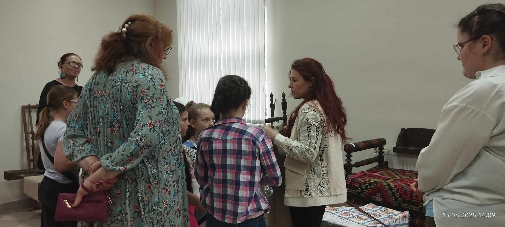
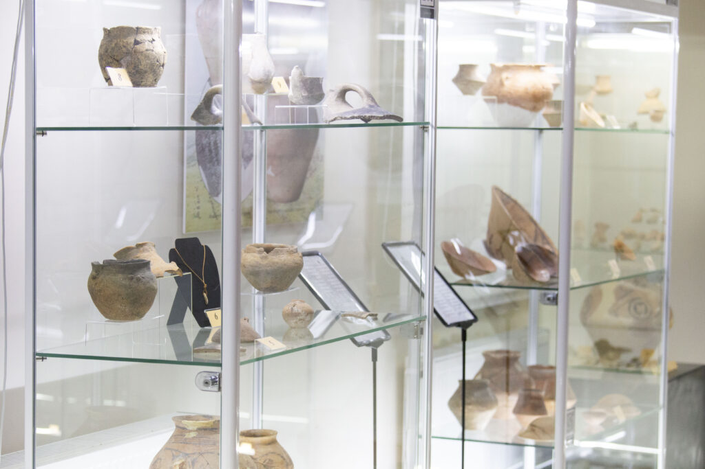
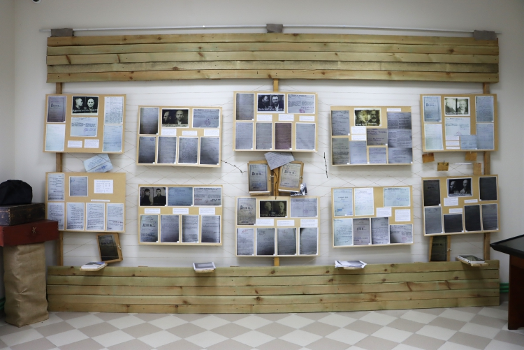
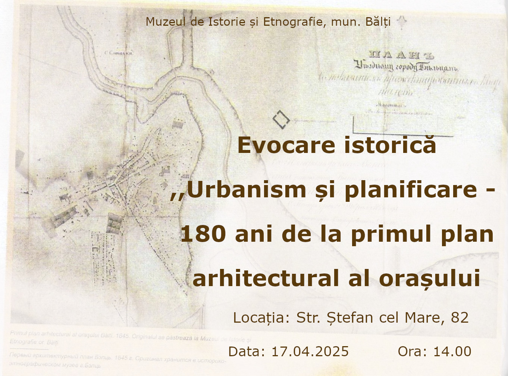
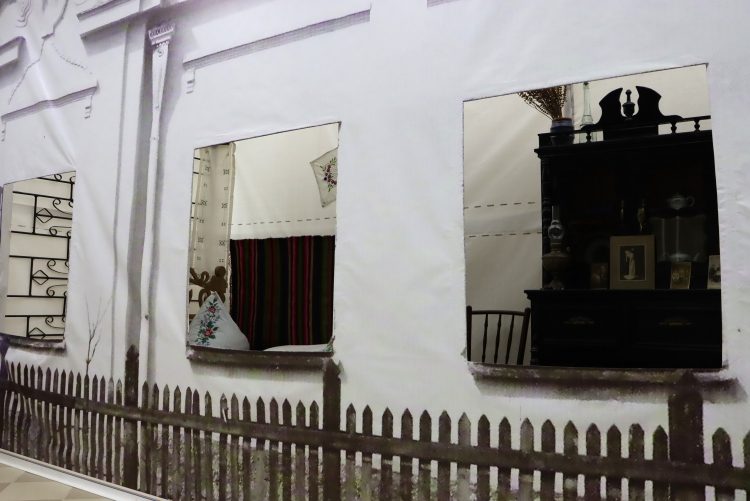

Muzeul de Istorie și Etnografie
Descoperiți povești, artefacte și expoziții interactive care readuc la viață trecutul municipiului Bălți.
Plan rapid de vizită
Pe mobil, poți ajunge rapid la secțiunile importante și poți rezerva vizita dintr-un singur tap.

Vezi locația pe hartăExpozițiile noastre
În fiecare an, Muzeul de Istorie și Etnografie din Bălți organizează expoziții captivante care explorează trecutul și patrimoniul local din nordul țării. Vă îndemnăm să vizitați muzeul pentru a trăi aceste momente istorice într-un cadru interactiv și educațional.

Vernisaj de expoziție: Madona din Ordășei
O incursiune în descoperirile arheologice ale tumulului 20 de la Ordășei
Vezi mai mult
Colecții și memorii ale victimelor deportărilor anului 1940
Colecții de obiecte și mărturii ale victimelor deportărilor sovietice.
Vezi mai mult
Urbanism și planificare - 180 ani de la primul plan arhitectural al orașului.
Descoperiți evoluția planurilor de urbanism și planificare în Bălți.
Vezi mai mult
Descoperiți Bălțiul de seară din epoca modernă
Expoziție cu fotografii și obiecte care reflectă viața de seară în Bălțiul modern.
Vezi mai multDespre muzeu și misiunea noastră
Muzeul de Istorie și Etnografie din Bălți are misiunea de a conserva, cerceta și valorifica patrimoniul cultural al regiunii de nord, în special a municipiului Bălți. Prin expoziții, activități educaționale și proiecte comunitare, conectăm trecutul cu prezentul într-un mod accesibil tuturor generațiilor.
În ultimii ani, muzeul s-a implicat în proiecte moderne, precum digitalizarea patrimoniului și expoziții internaționale, inclusiv colaborări cu specialiști din Republica Cehă pentru prezentarea descoperirilor arheologice rare.
Planifică vizita ta
Completează formularul de alături, iar echipa muzeului te va contacta pentru confirmarea detaliilor vizitei.
Cum să ne găsești?
Program de vizitare
- Marți - Vineri8:00 - 17:00
- Sâmbătă8:00 - 16:00
- Luni - DuminicăÎnchis
Locație
Strada Ștefan cel Mare, 82, Bălți, Republica Moldova
Telefon: +373 231 00 000